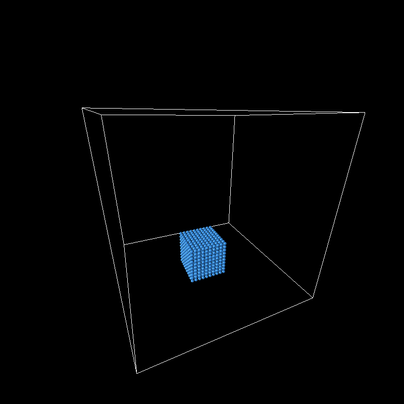

Abstract
Physically based simulations of fluids is a costly process that has many applications in graphics. In this project, we implemented this simulation by treating the fluid as a set of particles than interact with each other. The method and algorithms described in the paper by Miles Macklin and Matthias Muller (Position Based Fluids) is one of the more efficient methods for fluid simulation. In our implemntation, we included collision constraints and positional constraints that enforced a constant density to simulate the incompressible fluids and calculate the position and velocity updates per timestep. These algorithms resulted in a fairly accurate 3D particle representation.
Technical Approach
Our final project is water simulation using Position Based Dynamics. We divide the water (or any fluid) into disjoint segments, which we call particles. Each particle lies within a 'kernel' in the simulation space, to which we assign an arbitrary length (or radius). The physical properties of each particle are determined by summing up the corresponding properties of the neighboring particles that lie within the same kernel. Every neighboring particle is given a weight that is determined by its distance from the original particle that we were looking at and its density.
PBD:
Position Based Dynamics (based on Verlet integration) formulates and solves a set of positional constraints that enforce a constant density for each particle. Liquids do not change density when the pressure changes (they are mostly incompressible) and position based dynamics is less sensitive to density fluctuation than other methods (such as smoothed particle hydrodynamics). To enforce incompressibility, PBD solves a system of linear constraints, with each particle having one such constraint. Each constraint is a function of the particle's position and the positions of its neighbors (Macklin and Muller 2). It uses the Liebmann method as it updates the positions of the particles directly - changes in velocity are derived implicitly from the position updates.
We use two kernels (weighting functions) to find our density constraint-the WPoly6 kernel for density estimation, and the Spiky kernel for gradient calculation. The equations for these kernels were not found in the paper, so we used the ones located in "Fluid Simulation using Smoothed Particle Hydrodynamics" by Burak Ertekin instead.
WPoly6 kernel:
Spiky kernel:
The spiky kernel equation is used to mitigate the particle clustering problem. As particles become closer, they tend to stop repelling one another because the gradient of the kernel approaches zero. At first, we did not realize that we needed to use both the spiky and the wpoly6 kernels. There is a gif below of what our simulation looks like without the spiky kernel. The particles cluster and move in one direction.
Our goal is to find a correction value for each particle position that satisfies the constraint (which is calculated from the neighboring particles). Below are the equations for the density constraint of a particle based on its position, and the correction value for its position.
Density Constraint:
Correction Value:
Lambda_i is the density constraint of the current particle and lamda_j is the density constraint of the neighbor. W is the kernel function and h is the size of the kernel. p_i - p_j is the vector between the current particle i and the neighbor particle j in the loop.
When a particle has very few neighbors, those particles tend to cluster together. In order to avoid this, Muller and Macklin add in an artificial pressure term called scorr to the particle position correction value. At first, we did not use the scorr value but then we decided to as it made the simulation more realistic. Below is the equation for this term and the update correction equation.
Hashing Scheme:
We created a 3d matrix of hash codes where each code references a kernel in the simulation space (similar to the bouding box in project 4). In order to find a particle's kernel position in the space, we divide the x, y, and z values of the particles position by the kernel length. These values are then mapped to a hash code. We represent this new position as a string and then use the built in hash function to return a value with the aforementioned string as the input.
Algorithm:
- For each particle, apply the forces and predict its position
- For each particle, find its neighbors in the kernel
- For each solver iteration:
- Calculate the density constraint for each particle
- Using the density constraints, calculate the correction value for the position for each particle
- Make sure the particles collide with the bounding walls of the simulation
- Update the particle positions
- Update the particle velocities
Problems Encountered and Lessons Learned:
One of the main issues we encountered was finding the correct equations for gradient estimation. Most of the original equations we found were actually incorrect and did not work with the rest of our algorithm. The particles would do things like float around or sink into one another rather than behave like normal water particles. Here are a couple of gifs with gradient equations that did not work.
Incorrect Spiky Kernel
|

|

|
We needed to go back and read papers on Smoothed Particle Hydrodynamics (another way to simulate fluids) in order to find an equation that worked well for us. We learned that one paper is unlikely to have all of the information needed in order to implement something as expansive as water simulation.
Results
Below you can find our results.

|

|
References
We used the following two papers to assist our project.
'Position Based Fluids' by Miles Mackline and Matthias Muller
'Fluid Simulation using Smoothed Particle Hydrodynamics' by Burak Ertekin
Contributions
AnnaMarie Garlin:
AnnaMarie worked on the hashing scheme and the data structure for the map of particles corresponding to kernels. She also implemented getting the neighbors for each particle and some of the algorithm from the Macklin and Muller paper.
Mirabel Huff
Mirabel worked on the base algorithm for the particles, including finding the density constraints (using deltaP and lambda) and implemeting the density estimator as well as the the gradient calculator.